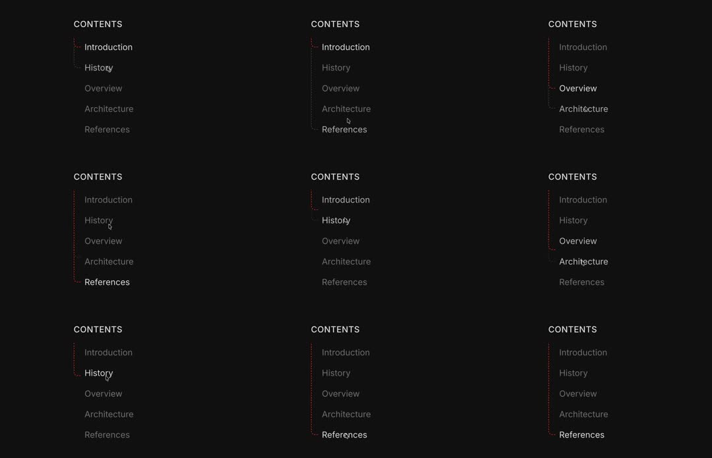

Dark 'CONTENTS' sidebar where a red dotted vertical rail bends into a right-angle hook pointing at the hovered/active item; the hook slides up/down the list with the pointer and the active label brightens.
Media
Frame-by-frame

0-15%
Sidebar list (Introduction, History, Overview, Architecture, References); red dotted rail runs down the left; the rail's hook (a short horizontal dotted stub bending 90deg right) sits at 'Introduction', its label white, others grey.
15-40%
Pointer moves to History: the hook point slides down the rail to History's row; the bend re-forms at the new row with a quick elastic snap; History brightens, Introduction dims.
40-60%
Hook jumps further down through Overview to Architecture; the vertical segment above the hook stays solid-ish while below it remains sparse dots; labels update brightness.
60-85%
Hook returns upward to History, then down to References - motion is a smooth slide of the bend position, not a fade.
85-100%
Hook settles on References; loop.
Build prompt
Rebuild this interaction 1:1: a dark "CONTENTS" sidebar where a red dotted vertical rail bends into a right-angle hook that points at the active row. The hook slides up and down the list following the pointer with an elastic snap; the active label brightens.
## Integration
Integration: stack-agnostic spec - springs given as stiffness/damping, timed motions as duration + curve, canvas/shader notes are perf guidance only; map every value to your framework and animation library of choice.
## Scene
Dark sidebar, header "CONTENTS" in small mono caps. List rows: Introduction, History, Overview, Architecture, References - inactive labels white/40, active label full white. Left edge: vertical rail of small red dots. At the active row, the rail bends 90deg right into a short dotted stub pointing at the label.
## Motion spec
Pattern: hover-driven indicator travel.
- Trigger: pointer over a row (hover intent immediate, no delay).
- Hook travel: the bend point slides along the rail to the new row over 250-350ms, spring stiffness ~300, damping ~26 - a slight overshoot on arrival, then it settles.
- The bend re-forms at the new row: the vertical segment above the hook reads denser/solid-ish; below it stays sparse dots.
- Labels crossfade brightness with the travel (200ms): arriving row to full white, departing row to white/40.
- The hook never fades or teleports - it always slides.
## Calibration
- Spring 300/26: the arrival overshoot (~5-8% past, one bounce) is the personality of this indicator.
- Travel time scales with distance - adjacent row ~250ms, three rows ~350ms.
- Label brightness change is subtle (40% -> 100%); the hook carries the wayfinding.
## Reduced motion
Hook jumps to the new row with a 150ms opacity crossfade of the whole rail; labels still update.
## Don't miss
- The hook is part of the rail itself (one continuous dotted path bending), not a separate marker layered next to it.
- Rail density differs above vs below the hook - the "filled path so far" reading is intentional.
- Dots, not a solid line - the red dotted texture is the identity of the piece.